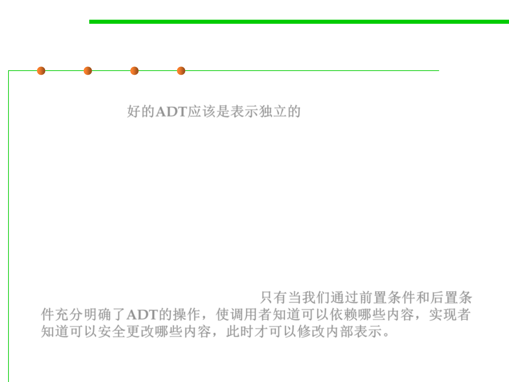

Representation Independence
3.3 Abstract Data Type (ADT)
▪ Critically, a good abstract data type should be representation
independent 好的ADT应该是表示独立的
– This means that the use of an abstract type is independent of its
representation (the actual data structure or data fields used to
implement it), so that changes in representation have no effect on code
outside the abstract type itself.
▪ For example, the operations offered by List are independent of
whether the list is represented as a linked list or as an array.
▪ You won’t be able to change the representation of an ADT at all
unless its operations are fully specified with preconditions and
postconditions, so that clients know what to depend on, and you
know what you can safely change. 只有当我们通过前置条件和后置条
件充分明确了ADT的操作，使调用者知道可以依赖哪些内容，实现者
知道可以安全更改哪些内容，此时才可以修改内部表示。
▪